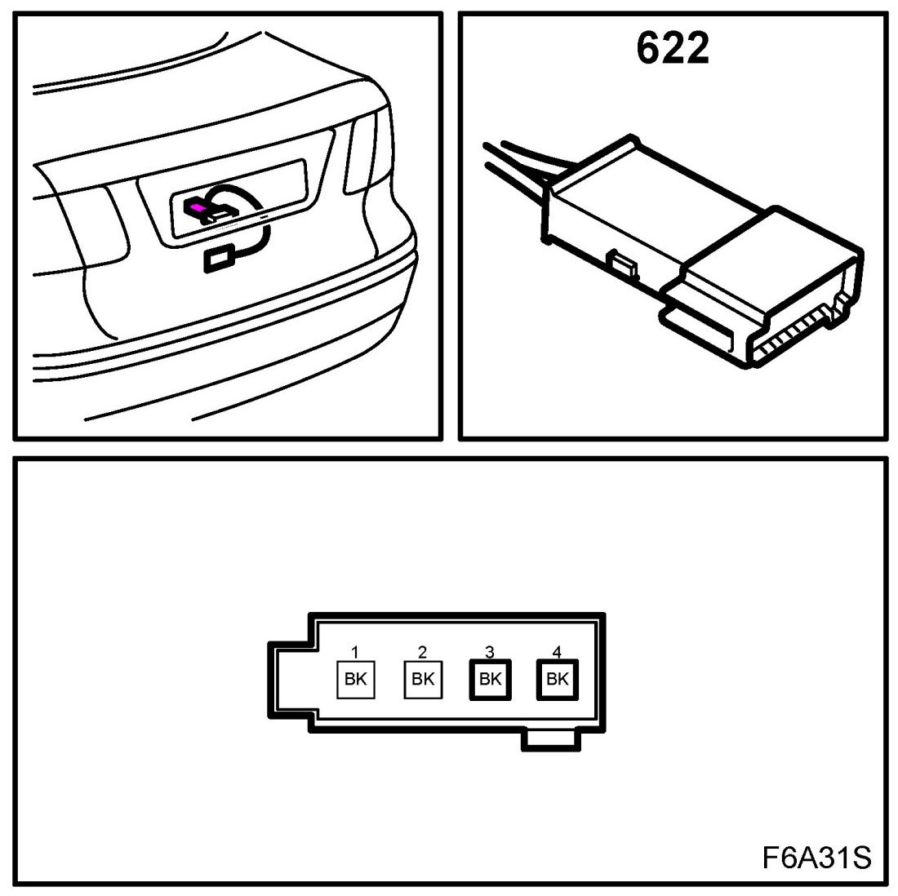
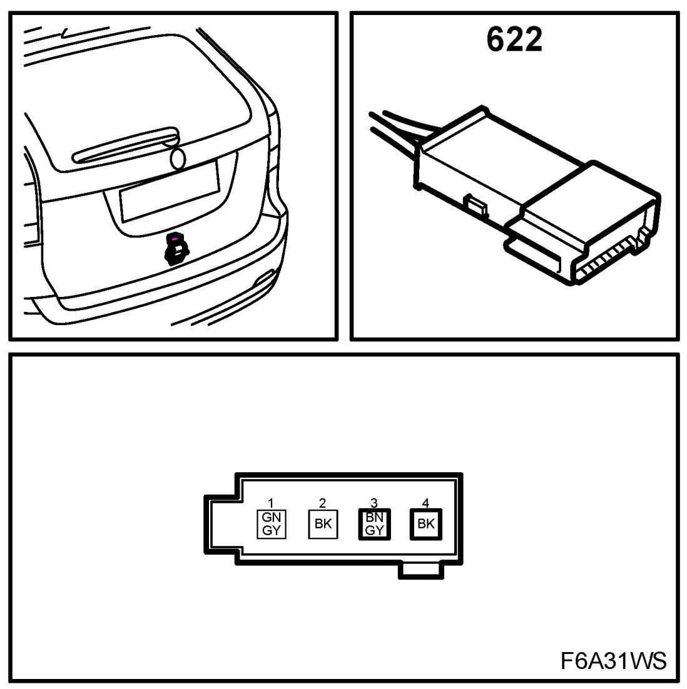

Operation CHARM
: Car repair manuals for everyone.
Home
>>
Saab
>>
2011
>>
9-3 FWD (9440) L4-2.0L Turbo
>>
Repair and Diagnosis
>>
Sensors and Switches
>>
Sensors and Switches - Accessories and Optional Equipment
>>
Trunk/Liftgate Sensor/Switch (For Alarm)
>>
Locations
>>
Bootlid Lock Microswitch (622)
Bootlid Lock Microswitch (622)
Bootlid Lock Microswitch (622)
Location: in the bootlid's handle module
4D/CV

5D
